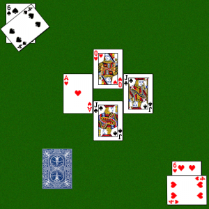

Trivia Game - JavaScript
Designed a server and client for a real-time multiplayer trivia game using JavaScript and HTML. Implemented radio buttons, text box’s, lists and drop down menus in HTML. The project Used Socket.io to enable real time bidirectional event-based communication between users. I effectively applied the use of the auto-reconnection/disconnection support to determine when new users join or leave the current trivia game. I also Used Node - Express to store previous and current players statistics in a secure database
Euchre Card Game - C
Each card must be represented by exactly two ‘chars’ representing a rank and suit. The possible rank options are: '2', '3', '4', '5', '6', '7', '8', '9', 'T', 'J', 'Q', 'K', 'A' . The following functions must be implemented: isValidRank(char c), isValidSuit(char c), and getTrump(). All four users will be repeatedly prompted to enter a card until a valid one has been entered. I had to determine which card/player wins the round. For instance, a card of type trump will always beat a card that is not of type trump. If two cards have the same suit, the highest rank is used
Threads - C/C++

Implemented a program to calculate the number of prime factors of all numbers in a binary text file using threads and Mutex’s. I used an array to dynamically allocate memory for the amount of numbers read from the command line arguments as well as the file name. • Initialized and used Mutex’s throughout the program to lock/unlock incrementing/decrementing variables so no other thread could execute the same region of code until it is unlocked by the thread who has locked it.
Maze - Java
The program will trace through the maze and count the perimiter of a series of connected pixels. • If the position to the left, right, above, or below has ink then the program will perfrom a recursive call on the next pixel. • The program will start on some arbitrary pixel, and determine how many pixels (connected to the starting position) have ink. • The program checks if there is a wall to the left, right, above, or below, if there is it will not call the function in that direction. • After perfoming basic edge cases the program will determine if there is ink on the pixels around it and make a recursive call for instance making a call to the left, computePixelPerimeters(row,column-1);. • The program will continue to make recursive calls until there are no more pixels left to visit, this is done by assigning a “hasVisited” attribute to every pixel and setting it to true after it has been counted. • The program will output the perimiter of the series of connected pixels in the grid.